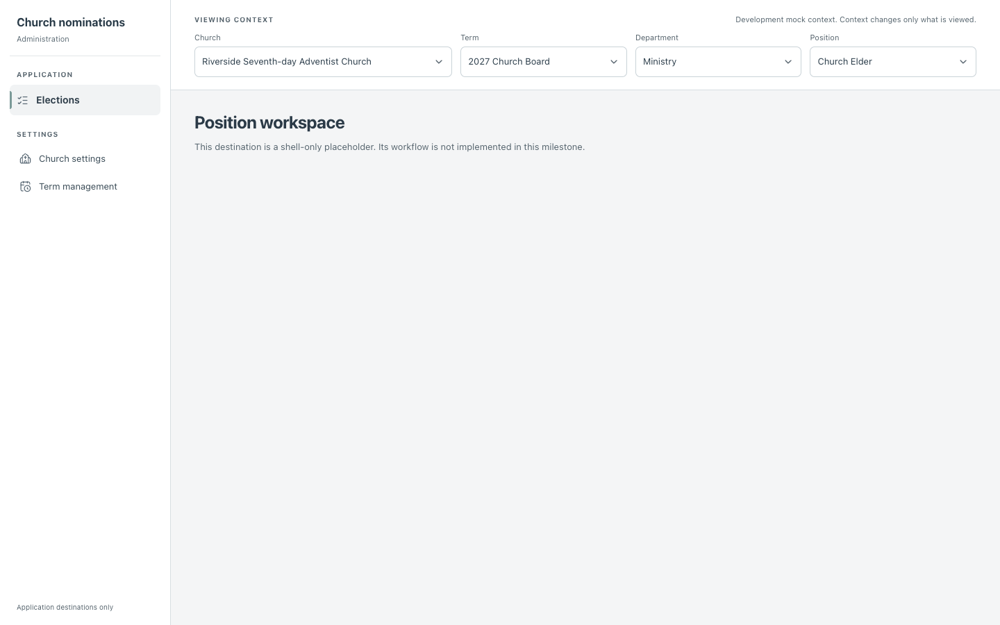
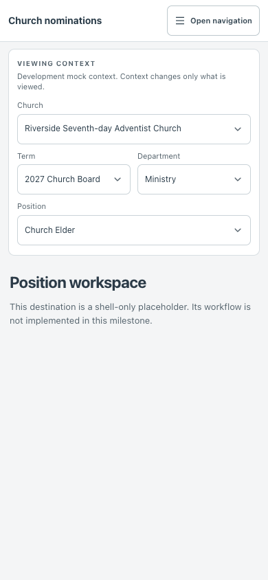
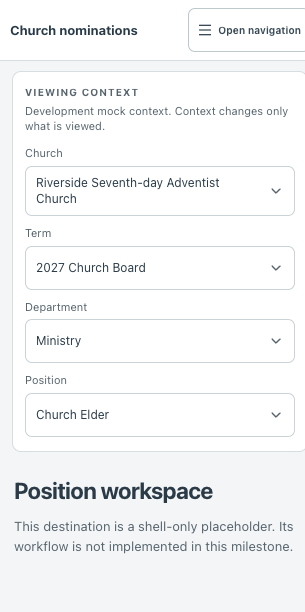
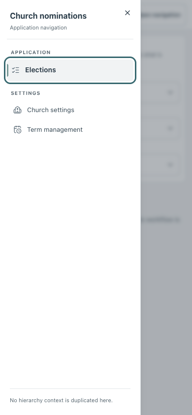

Scope: M1 authorizes the shell, application navigation, and context selectors only. Missing position summary, poll, candidate, and decision artwork is intentional and is not scored as a defect.
Desktop · 1440px
Expected: persistent 246px application sidebar and a wide context/workspace column.


Mobile · 390px
Expected: mobile header and selectors arranged with Church, Term/Department, and Position rows.


Compact · 320px
Expected: four stacked context selectors, full labels, and no horizontal page overflow. The CSS viewport was 320px; its 305px content width excludes the vertical scrollbar gutter.


Mobile navigation open · 390px
Expected: labeled sheet with full Elections and Settings destinations; no hierarchy context in the menu.

